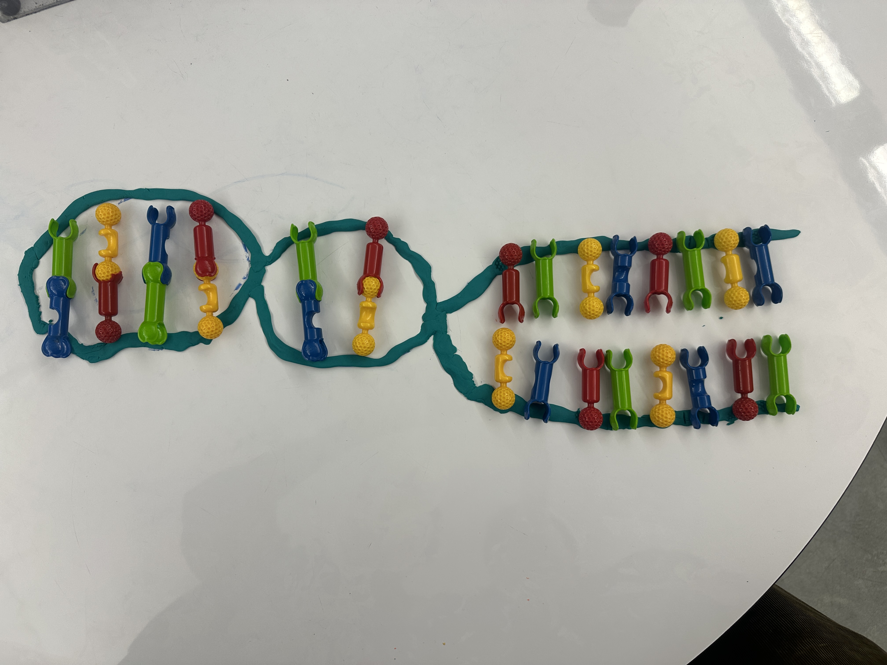
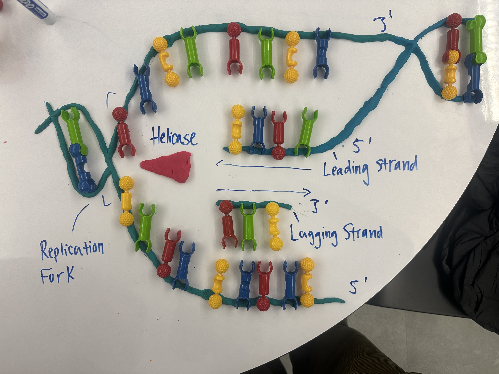
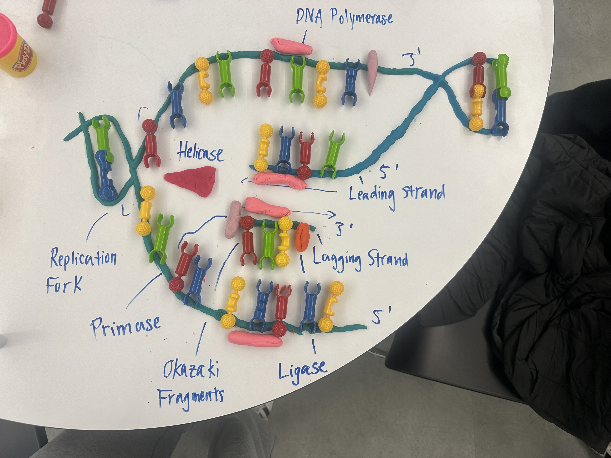
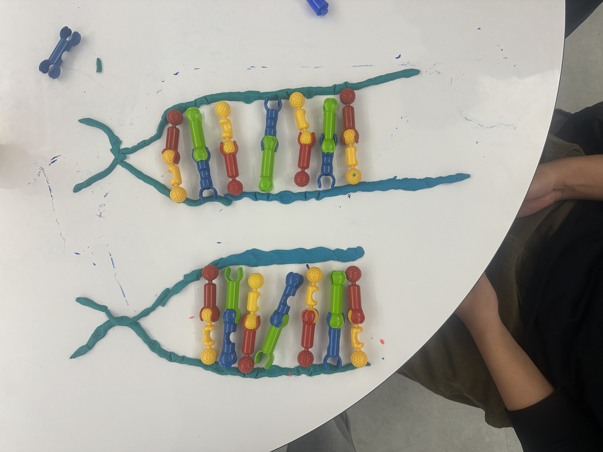

Select a component
Click on any part of the DNA model to learn more.
Component Key
Backbone
Helicase
DNA Polymerase
Primase
Ligase
Topoisomerase
SSB Proteins
RNA Primer

1. Original DNA strand begins to unravel and is getting ready for replication.

2. Labelled Version

3. Helicase unwinds the DNA double helix. The leading strand is replicated continuously, while the lagging strand is replicated discontinuously in short sections (Okazaki fragments).

4. DNA polymerase III synthesizes the leading strand by adding nucleotides to the 3' end while primase synthesizes RNA primers needed to start replication.

5. End result of replication. Two separate DNA strands are synthesized.